PhD Defence · 9 October 2026
Deep Generative Models
From Neural Architecture and Hand Motion to Language
Muchen Li
Department of Computer Science · University of British Columbia
Supervisors: Leonid Sigal and Renjie Liao
Supervisory committee: Vered Shwartz and Jeff Clune
University examiners: Mark Schmidt and Yankai Cao
External examiner: Meng Jiang (University of Notre Dame)
Chair: Sarah Burke
[0:15] Thank you, Professor Burke, and thank you all for being here today.
Today I'm going to present my thesis, Deep Generative Models for Structured Data .
Generative modeling
Data
train
p θ ( x ∣ cc condition )
Model
[0:45] So given a bunch of data points, generative models are a family of models that we can train to learn the distribution of the data .
▸ click After that, we can draw new samples from the learned distribution.
▸ click The model is parameterized by θ, which is usually a deep neural network.
▸ click And in practice, we model the conditional distribution: the condition is different in different applications.
Applications
p θ ( x ∣ c )
ChatGPT Claude Code
Chat & coding assistants
World models for robotics
Image credits: AlphaFold 3 (Abramson et al., 2024) · Cosmos (NVIDIA, 2025) · AMP (Peng et al., 2021)
[0:50] Why do generative models matter? There are already a lot of applications of generative models, in very different domains.
▸ click For example, in early-stage drug discovery, people model molecules and proteins as graphs.
▸ click Large language models are widely used as chat and coding assistants.
▸ click Generative models of images and videos are used in world models, for robotics.
▸ click And generative models of motion, human or hand motion, are widely used in animation and games.
In this thesis, we study how to design and train Generative Models Structured Data .
[0:10] So in this thesis, we study how to design and train generative models for structured data.
What we care about in structured data
1 Explicit structure
the structure itself is what we care about
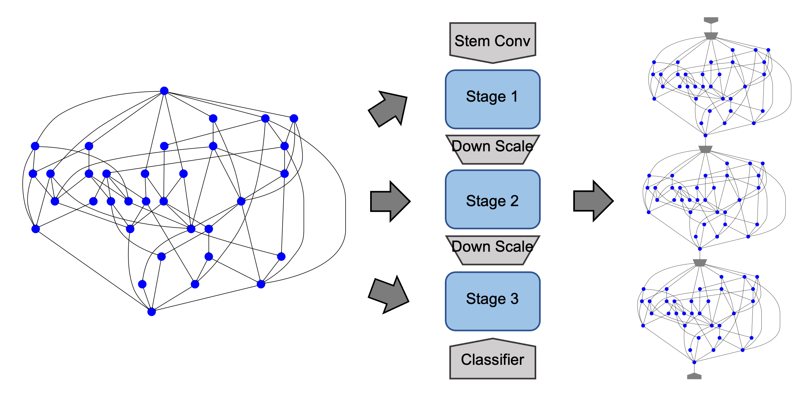
Neural network: the structure of the network itself
Q 1 2 3 4 A
\(2^{2^x}+1=17y\), all \(x,y\in\mathbb N\)
\(2^4\equiv-1\), so \(2^8\equiv 1 \pmod{17}\)
if \(x\ge 3\): \(8\mid 2^x\), so \(2^{2^x}\equiv 1\)
then \(2\equiv 0 \pmod{17}\): contradiction, \(x\le 2\)
check \(x=0,1,2\): only \(2^{2^2}+1=17\)
\((x,y)=(2,1)\)
Math solution: explicit step-by-step reasoning chain
Thrust 1
When explicit structure is what we care about, we should capture it in the training recipe of model design or data pipeline.
[1:00] So there are two kinds of structure that we care about. Think of them as a spectrum, from explicit to implicit.
Sometimes the output of a generative model has an explicit structure, and getting that structure right is what we care about.
▸ click For example, in neural architecture search, the generative model designs a neural network, and the structure of the network is what we care about.
▸ click Or for a math solution, it is the explicit, step-by-step reasoning, where each step depends on some of the previous steps.
▸ click So the first thrust of this thesis: when we care about the explicit structure of the data, we should capture that structure in our training recipe : in the model design, or in the data preparation.
What we care about in structured data
2 Implicit structure
hidden inside the data
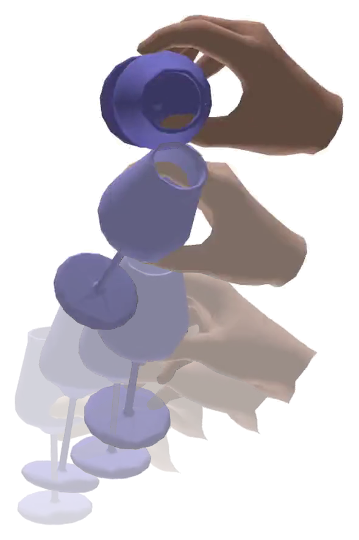
Hand–object motion
=
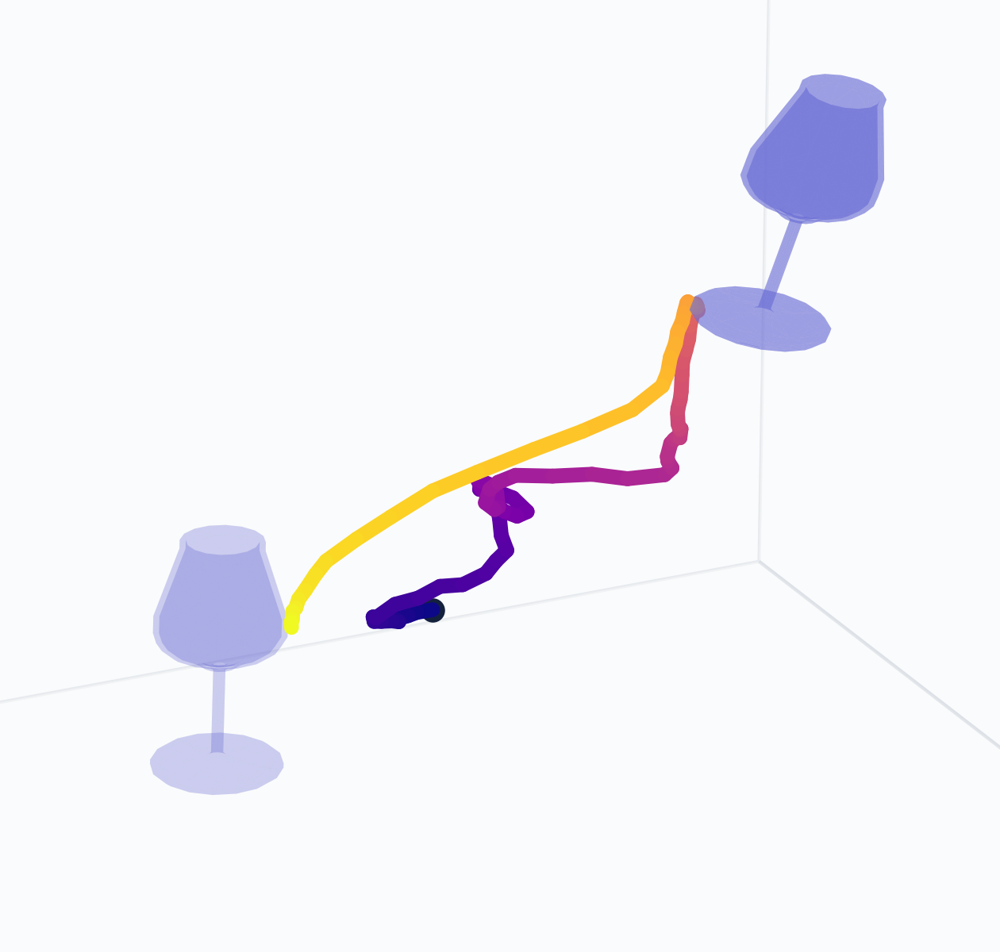
Global motion
Latent \(Z\)
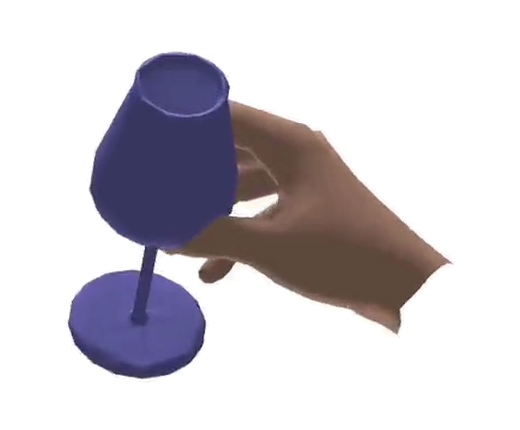
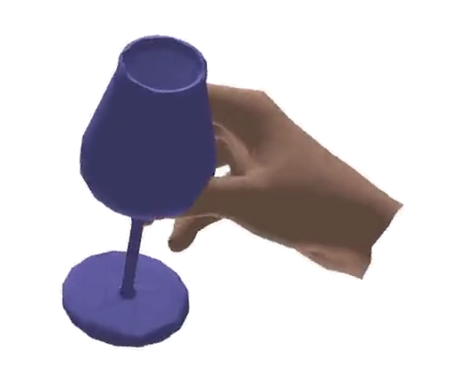
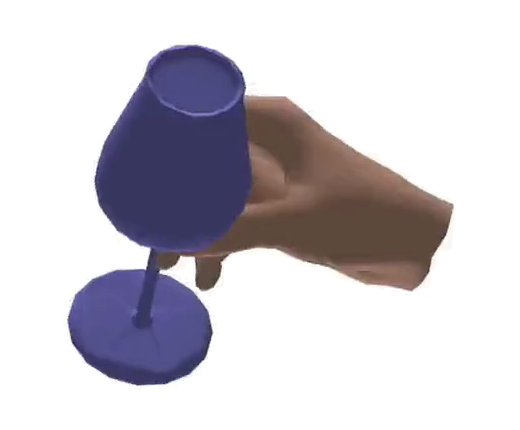
Grasp, per frame
LLM
The gardener sprayed the plant … bug
→ insect
The team delayed the release … bug
→ software error
The words before decide what “bug” means
Thrust 2
We can make assumptions about implicit structure within the data, and use them to guide the design of generative model.
[1:00] For the other part, the structure is more implicit, hidden inside the data.
▸ click For example, a hand–object interaction can be seen as a global motion of the wrist and the object, plus the grasp in each frame. The structure here is not the shape of the hand: it is how the motion splits into parts.
▸ click In natural language, we also have such implicit structure: what a word means depends on its context. To infer whether "bug" means an insect, you look at the context: is it in the garden, or in software?
▸ click So the second thrust: we can make assumptions about the implicit structure within the data, and use them to guide the model design , for generative models with better interpretability and better performance.
My PhD work
boxes & masks
graphs
motion
text
images
2025
Free Lunch Alignment
in submission
text
2026
Mixture of Memory Embeddings
NeurIPS 2026
To do: confirm Free Lunch Alignment status on the defence date.
[0:15] So in my PhD, I worked on a diverse set of six projects, as first or co-first author, on different types of generative models. Today, I will present four of them.
Today
Four projects, from explicit to implicit structure Thrust 1
Capture explicit data structure
Thrust 2
Use implicit structure in the data
Explicit
Implicit
GraphPNAS
a network is a graph
TMLR 2023 · first author
AoPS
a solution is a chain of steps
ICML 2025 · co-first author
LatentHOI
motion = global motion + grasp
CVPR 2025 · first author
Mixture of Memory Embeddings
the words before decide the meaning
NeurIPS 2026 · first author
[0:25] I categorize them into the two parts of the thesis: modeling the explicit structure in the data, and modeling the implicit structure within the data . So, starting with the explicit structure.
GraphPNAS
2023 GraphPNAS: Learning Probabilistic Graph Generators for Neural Architecture Search
Muchen Li , Jeffrey Yunfan Liu, Leonid Sigal, Renjie Liao
Thrust 1
Capture explicit data structure
Structure of neural networks as directed acyclic graphs
input 1 conv3x3 2 sep5x5 3 max3x3 4 conv5x5 5 sep3x3 6 avg3x3 output Explicit
Implicit
Mixture of Memory Embeddings
[0:15] As a starter, the first project: GraphPNAS, our TMLR 2023 paper. In this project, we study the structure of feed-forward neural architectures, as a directed acyclic graph .
GraphPNAS · Problem
Why it matters
LeNet
VGG
ResNet
Transformer
Network Architecture Designed by Hand
Why it is hard
2.1 × 10149
Search Space Size for a 32 Layer FFN
≈ 320
Rounds of Training Budget
Large Search Space and Limited Search Budget
[0:40] The goal here is to train a generator that can design new neural architectures. But why would we like to do that?
▸ click Successful networks like LeNet, VGG, ResNet and Transformers have been designed by hand, through time-consuming trial and error, and human knowledge. We hope to automate this process.
▸ click But it is challenging, because the search space is enormously large: about 10 to the 149 possible wirings. And we only have enough compute to evaluate about 320 networks. So a generative model that learns efficiently is very important for this task .
GraphPNAS · Neural architecture search
A feed-forward neural network can be seen as a directed acyclic graph
input
1
2
3
4
5
6
output
Cell Type Vector
\(X\)
[conv3x3, sep5x5, max3x3,
conv5x5, sep3x3, avg3x3]
Adjacency matrix
\(A\)
[[0, 0, 0, 0, 0, 0],
[1, 0, 0, 0, 0, 0],
[1, 1, 0, 0, 0, 0],
[1, 0, 1, 0, 0, 0],
[0, 1, 0, 1, 0, 0],
[0, 0, 0, 1, 1, 0]]
\(\mathcal{G} = (A, X)\)
[0:40] Any feed-forward neural network can be seen as a directed acyclic graph , which lets us describe it as a pair: the cell-type vector, X, and the adjacency matrix, A. The zeros and ones in A say whether one cell is wired to another, for example the second to the fifth, and the entries of X say which computation each cell performs.
GraphPNAS · Prior work
Previous work utilizes an RNN and flattens the neural architecture into a chain.
1 1,2 1,3 2,4 4,5 Node 1 Node 2 Node 3 Node 4 Node 5 Node 6 conv3x3
sep5x5
max3x3
conv5x5
sep3x3
avg3x3
Limitations
It does not see the topology: the structure is lost in the chain.
With many nodes, the chain creates long-range dependencies that are hard to learn.
[0:50] Before GraphPNAS, previous work used an RNN as the controller. The RNN sequentializes the same directed acyclic graph into a chain: for each node, its connections and then its operation, predicted one by one.
▸ click So there are immediately two limitations. First, it completely ignores the topology , because the structure is lost in the chain. Second, with many nodes, the chain creates long-range dependencies that are hard for the model to pick up. Here, node 5 has to refer back to node 2.
GraphPNAS · Generator
Build the graph node by node, seeing the partial graph
\(p(G) = \prod_i\, p(\text{node}_i,\ \text{its edges} \mid \text{graph so far})\)
Edges: a mixture of \(K\) Bernoullis
\(\mathbb{P}\left(A_{i,:} \mid A_{i-1,:}, X_{i-1}, \cdots, A_{1,:}, X_{1}\right) = \sum_{k=1}^{K} \alpha_{k} \prod_{1 \le j < i} \theta_{k,i,j}^{A_{i,j}} \left(1-\theta_{k,i,j}\right)^{1-A_{i,j}}\)
Cell type: a categorical
\(\mathbb{P}\left(X_{i} \mid A_{i-1,:}, X_{i-1}, \cdots, A_{1,:}, X_{1}\right) = \text{Categorical}\left(\beta_{1}, \cdots, \beta_{D}\right)\)
[0:55] So instead, we treat the generation as an autoregressive process on the graph itself: the generator always sees the graph built so far .
▸ click We augment it with a new node, and all the possible edges to the earlier nodes,
▸ click encode the new graph with node and edge features,
▸ click and put all the features into a graph neural network, for message passing.
▸ click Then we model the edges as a mixture of Bernoulli distributions, and the node as a categorical distribution, where the parameters come from the output of the graph neural network.
▸ click And we sample from them, to get the new edges and the new node type. That finishes one round of graph generation.
GraphPNAS · Pipeline
A graph generator, trained with reinforcement learning
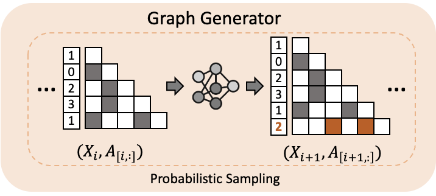
Samples \(\mathcal{G}\)
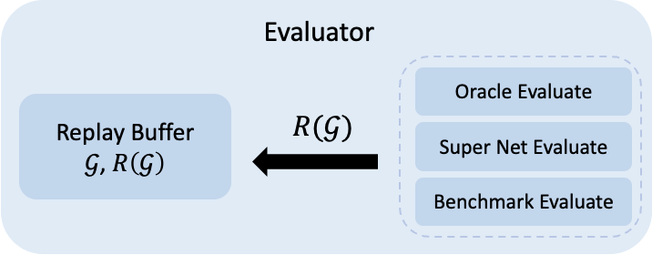
[0:30] So to train this, we use a reinforcement learning framework, where GraphPNAS is the graph generator.
▸ click We sample neural architectures with it, and send them to an evaluator, which trains them on a proxy task, for example Tiny-ImageNet classification.
▸ click The accuracy tells us how good the architecture is, and we use it as a reward to reinforce the generator.
GraphPNAS · Results
Late in the search, ours concentrate on accurate networks; the RNN's scatter
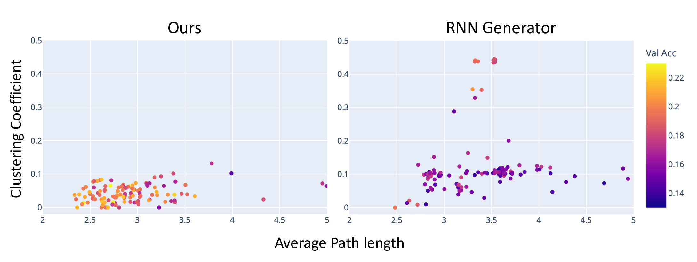
Ours: a distribution of good networks
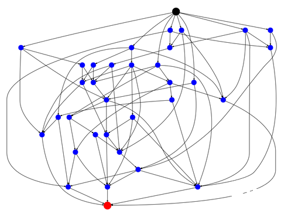
63.23
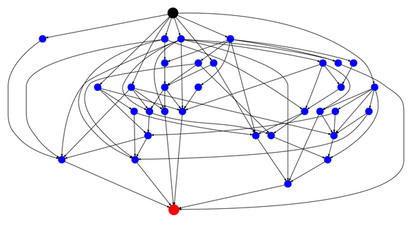
63.06
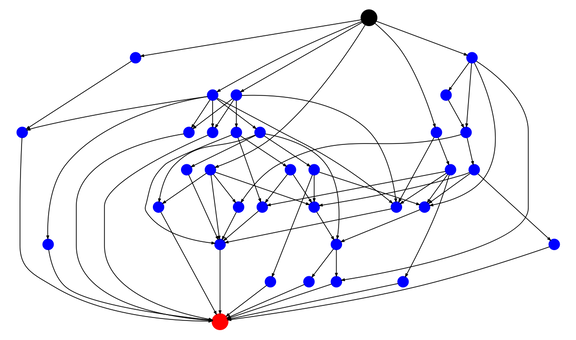
62.73
RNN: scattered, no good distribution
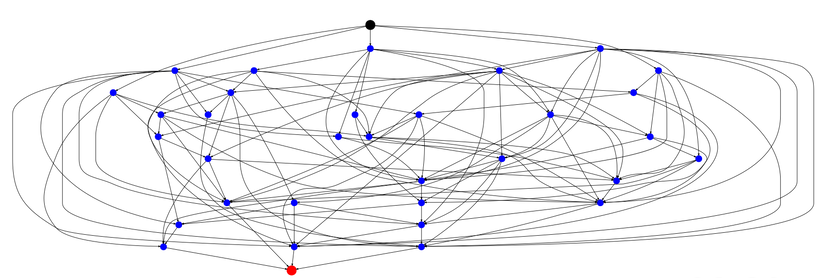
62.29
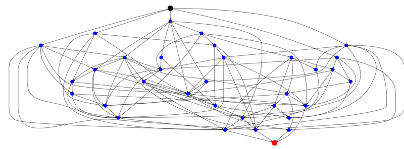
62.04
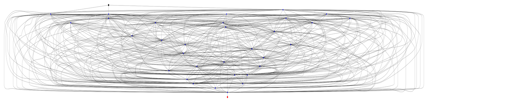
60.86
RandWire
2.1 × 10149 wirings
≈ 320 networks trained
same budget for both
[0:50] So for the results, let's first look at what the two generators sample. The setting is in the top right: we train our model and the RNN-based generator in the same setting, with the same budget. Each dot is a network sampled late in the search: the axes are properties of its graph, and the colour is its accuracy on the proxy task.
▸ click Our generator produces a concentrated set of networks, in one region with high accuracy: it has learned a distribution of good networks .
▸ click The samples from the RNN generator, which ignores the topology, scatter: it fails to learn a good distribution, and even has some severe failure cases.
GraphPNAS · Results
NAS-Bench-101 Results: Performance vs Search Budget
Ours explores the search space more effectively, and finds better networks within the same search budget
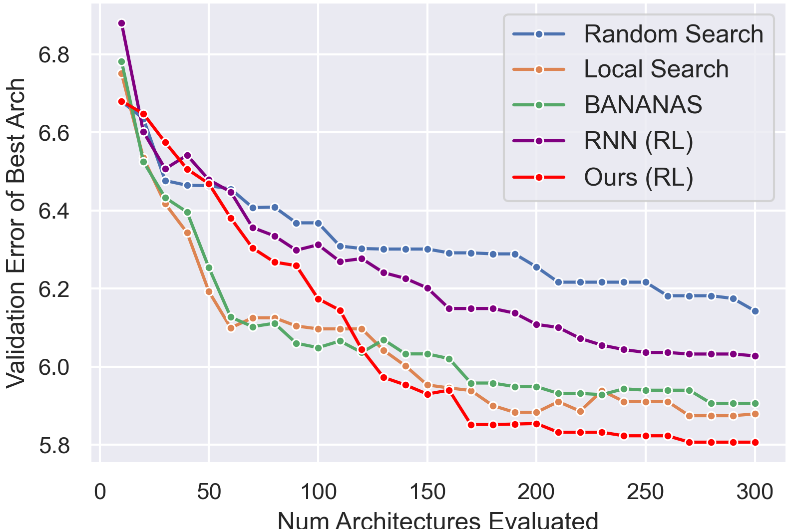
Best error found vs. Search Budget
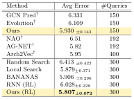
[0:25] On NAS-Bench-101, every method gets the same budget of 300 queries. The curve shows the best error found as more networks are evaluated. Our method explores the search space more effectively, and finds better networks within the same search budget : the lowest error among the compared methods, and the most stable across runs.
GraphPNAS · Conclusion
Thrust 1
Capture explicit data structure
Modeling graph structure explicitly allows the generator to learn more efficiently.
Graph (ours)
input 1 conv3x3 2 sep5x5 3 max3x3 4 conv5x5 5 sep3x3 6 avg3x3 output >
Chain (RNN controller)
conv3x3 1 sep5x5 1,2 max3x3 1,3 conv5x5 2,4 sep3x3 4,5 avg3x3 Node 1 Node 2 Node 3 Node 4 Node 5 Node 6 Explicit
Implicit
Mixture of Memory Embeddings
[0:15] So the conclusion for GraphPNAS: when you have a large search space and a small search budget, modeling the architecture explicitly as a graph brings much better learning efficiency than ignoring the structure .
Previously, we've seen that capturing the explicit structure is important in the generative model design
Here, we show that it is equally important in preparing the data
[0:15] Previously, we've seen the case where capturing the explicit structure is important in the generative model design.
▸ click Here, we're going to show that it is equally important in preparing your data .
AoPS
2025 AoPS: Leveraging Online Olympiad-Level Math Problems for LLMs Training and Contamination-Resistant Evaluation
Sadegh Mahdavi*, Muchen Li *, Kaiwen Liu, Christos Thrampoulidis, Leonid Sigal, Renjie Liao · *equal contribution
Thrust 1
Capture explicit data structure
Structure of math solutions as chains of reasoning steps
Q 1 2 3 4 A \(2^{2^x}+1=17y\), all \(x,y\in\mathbb N\)
\(2^4\equiv-1\), so \(2^8\equiv 1 \pmod{17}\)
if \(x\ge 3\): \(8\mid 2^x\), so \(2^{2^x}\equiv 1\)
then \(2\equiv 0 \pmod{17}\): contradiction, \(x\le 2\)
check \(x=0,1,2\): only \(2^{2^2}+1=17\)
\((x,y)=(2,1)\)
Explicit
Implicit
Mixture of Memory Embeddings
[0:10] That's AoPS, our ICML 2025 paper, where we study the structure of math solutions, as chains of reasoning steps.
AoPS · Problem
Why it matters
Training Olympiad-level math reasoning requires high-quality reasoning data.
Why it is hard
Detailed, step-by-step solutions to Olympiad-level problems are rare and costly to collect. We aim to automate it.
[0:40] Here, the problem is math reasoning: we train language models for Olympiad-level mathematical reasoning. And what we need is a detailed, step-by-step solution for every question: a chain where each step can depend on the previous ones.
▸ click At the time, in late 2024, Olympiad-level math reasoning was one of the hardest tasks for language models.
▸ click But detailed, step-by-step solutions to Olympiad-level problems are rare, and costly to collect. We aim to automate it.
AoPS · Data
Raw Forum data is messy; We need a step-by-step chain structure.
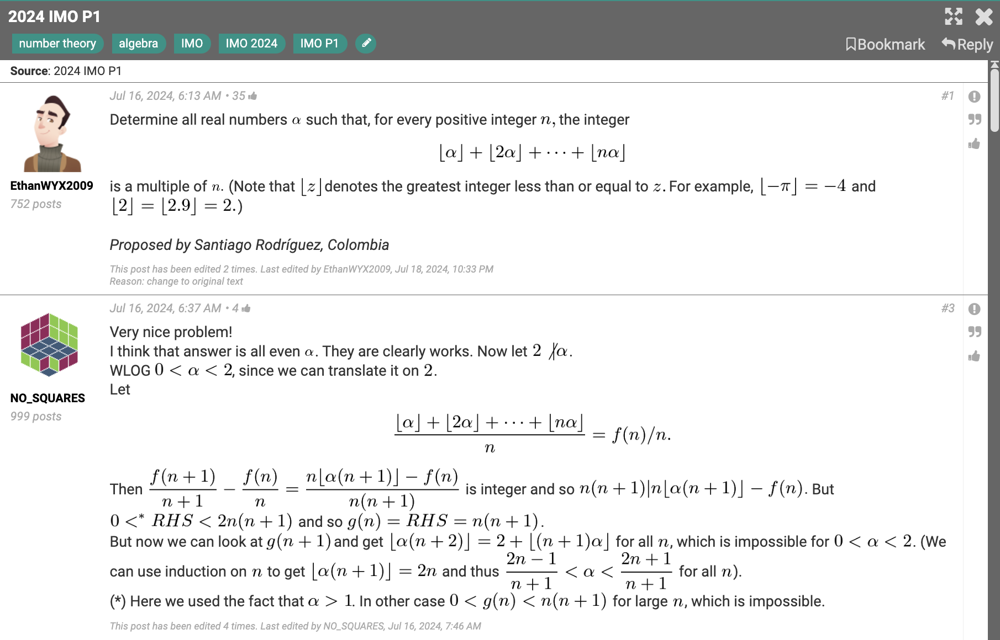
1.07M
Discussion thread of competition math on the Art of Problem Solving forum
Q 1 2 3 4 A \(2^{2^x}+1=17y\), all \(x,y\in\mathbb N\)
\(2^4\equiv-1\), so \(2^8\equiv 1 \pmod{17}\)
if \(x\ge 3\): \(8\mid 2^x\), so \(2^{2^x}\equiv 1\)
then \(2\equiv 0 \pmod{17}\): contradiction, \(x\le 2\)
check \(x=0,1,2\): only \(2^{2^2}+1=17\)
\((x,y)=(2,1)\)
Irrelevant discussion sits between the useful solution
Human solution skips details, and even whole steps
Training directly on the raw forum solutions degrades performance.
[0:40] While it is costly to hire mathematicians to solve each problem step by step, there is no lack of hard math problems and discussion around them: on online forums, people discuss problems and post potential or partial solutions.
▸ click But the real-world data is messy. There is a lot of irrelevant discussion, and more importantly, when people answer, they tend to skip details, or even whole steps. So the solutions are jumpy in logic: we do not see a coherent chain of thought in the data .
▸ click And if you train your language model directly on these forum solutions, the performance actually degrades.
AoPS · Pipeline
Recover the chain structure from the human solution.
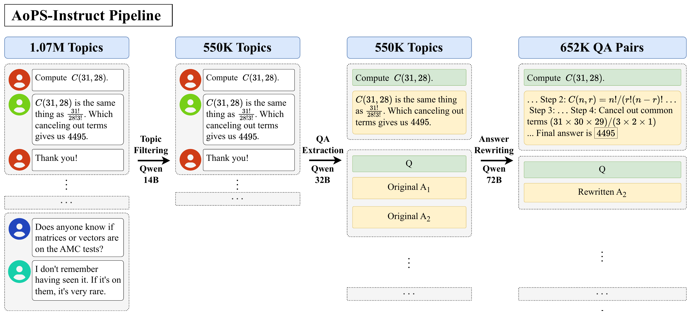
[0:35] So, to recover the full chain of thought, we design a data pipeline: we take the forum threads, keep the math questions, throw away the irrelevant discussion, and extract the question–answer pairs.
▸ click More importantly, we use an existing general-purpose language model to rewrite each human answer into a clean, step-by-step chain of thought . That gives us about 650 thousand question–solution pairs, which we call AoPS-Instruct.
AoPS · Rewriting
The rewriting step fills in the steps the forum answer skipped
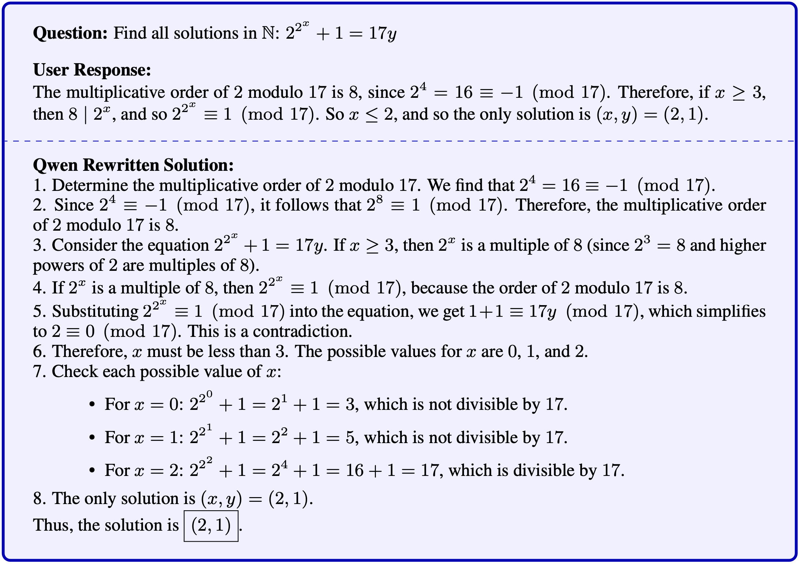
Forum answer: from x ≤ 2 straight to the solution
Rewrite: lists the remaining cases and checks each one
[0:30] Here is an example of what the rewriting looks like. In the solution from the raw forum, there is a huge logic jump, in the red box here.
▸ click After the rewrite, this jump becomes three steps: we have a more complete chain of thought, with the logic gaps bridged .
AoPS · Results
Clean chains train better: rewrites beat raw answers
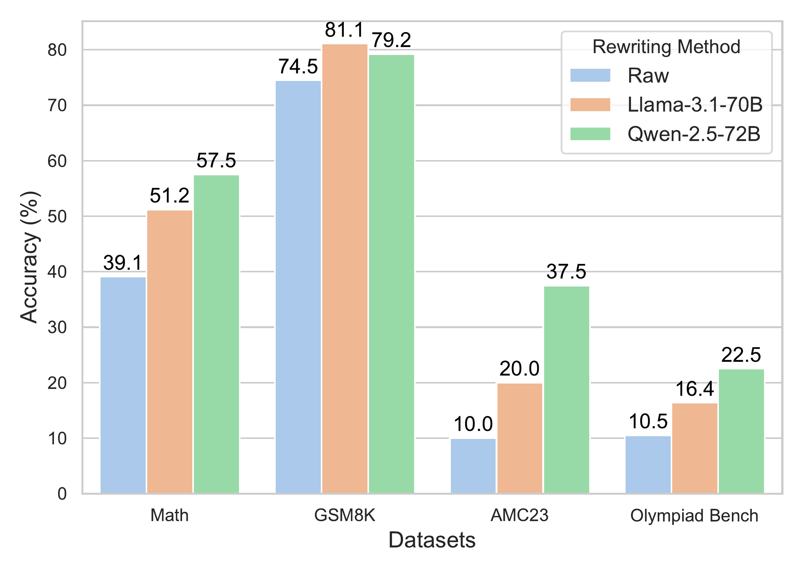
We compare performance with and without rewriting.
Rewriting always helps; the stronger rewriter helps more.
[0:45] So does it actually help? This is our ablation study: we use the same recipe, and train either on the dataset before the rewrite, the human answers, or after it.
▸ click We find that after the rewrite, we gain a huge performance boost on all the math benchmarks .
▸ click And interestingly, the better the rewriting model, the bigger the boost, on three of the four benchmarks.
AoPS · Conclusion
Thrust 1
Capture explicit data structure
Clean, structured reasoning data trains better models than noisy, unstructured raw data
Clean chains
Q 1 2 3 4 A \(2^{2^x}+1=17y\), all \(x,y\in\mathbb N\)
\(2^4\equiv-1\), so \(2^8\equiv 1 \pmod{17}\)
if \(x\ge 3\): \(8\mid 2^x\), so \(2^{2^x}\equiv 1\)
then \(2\equiv 0 \pmod{17}\): contradiction, \(x\le 2\)
check \(x=0,1,2\): only \(2^{2^2}+1=17\)
\((x,y)=(2,1)\)
every step written out
>
Noisy raw answers
steps skipped
Explicit
Implicit
Mixture of Memory Embeddings
[0:15] So the conclusion: for math reasoning, clean, structured reasoning data trains much better models than noisy, unstructured raw data .
So far, we have discussed explicit structures, in modeling and in data
But when directly modeling the data is challenging, we can make assumptions about its implicit structure , to aid the generative model design
[0:20] So far, we have been discussing explicit structures, in modeling and in data.
▸ click But sometimes, when directly modeling the data is challenging, there are also assumptions that you can make about the implicit structure of the data itself , to aid the generative model design.
LatentHOI: On the Generalizable Hand Object Motion Generation with Latent Hand Diffusion
Muchen Li , Sammy Christen, Chengde Wan, Yujun Cai, Renjie Liao, Leonid Sigal, Shugao Ma
Thrust 2
Use implicit structure in the data
Implicit structure inside hand–object motion: the grasping pose and the global motion
Hand–object motion
=
Global motion
Latent \(Z\)
Grasp, per frame
To do (Muchen): the short Thrust 2 label for the connection slides (now “Use implicit structure in the data”).
Explicit
Implicit
Mixture of Memory Embeddings
[0:15] This is LatentHOI, our CVPR 2025 paper: we study the implicit structure inside hand–object motion, the grasping pose and the global motion.
LatentHOI · Problem
“drink with the cup”
+
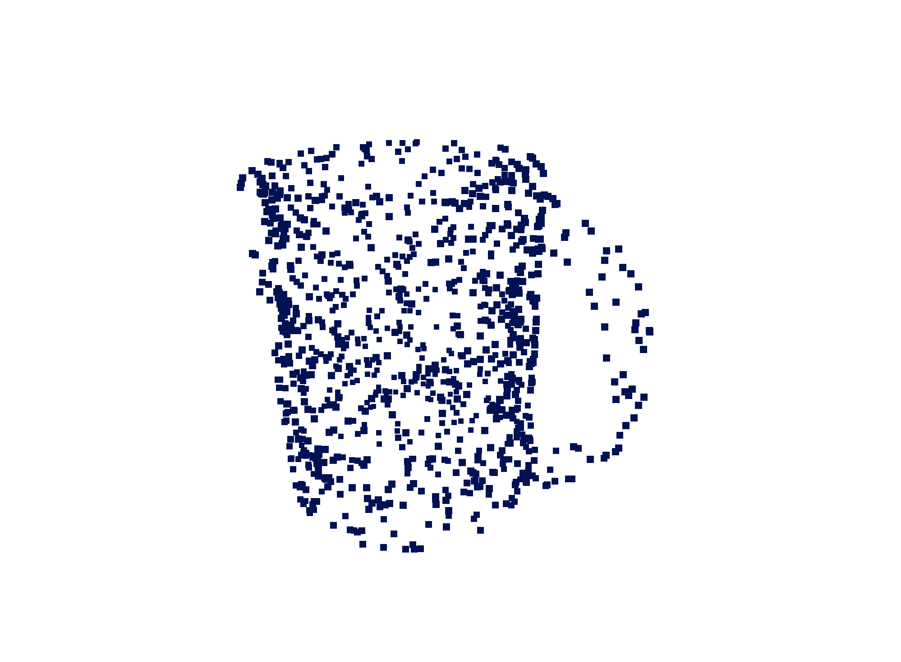
object shape
Generator
\(\mathbb P(H,O\mid C)\)
hand
object
text +
Why it matters
3D simulation
Games
Robot learning data
Why it is hard
Hand–object motion (GRAB)
1.3k sequences
Body motion (AMASS)
11.2k sequences
Self-driving (Waymo)
7.64M tracks
log scale
M. Li, S. Christen, C. Wan, Y. Cai, R. Liao, L. Sigal, S. Ma · LatentHOI · CVPR 2025
[0:40] In this paper, we generate hand–object interaction motion: given a text prompt and the object's shape, we model the motion of both hands, H, and of the object, O, given the condition, C.
▸ click Generating hand–object motion is pretty useful for 3D simulations and games, and even as data for robot learning.
▸ click However, the challenge is data . Compared with body motion, and especially with self-driving, hand–object data is orders of magnitude smaller, because precise capture is expensive. And at test time, the objects are new.
LatentHOI · Baseline
Joint modeling overfits the training set and generalize badly Object shape
“drink with the mug”
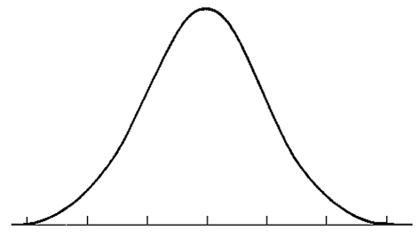
Noise
Repeated denoising × T
\(H\)
\(O\)
\(\mathbb P(H,O\mid C)\)
Full hand and object motion, as one vector
=
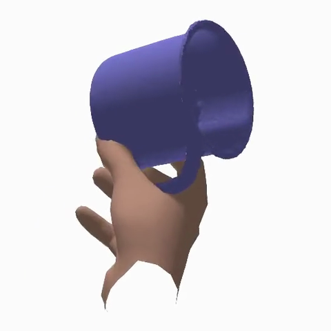
Joint model (MDM)
MDM: Tevet et al., 2023
[0:30] So the direct way is to put everything, the hands and the object, into a single vector, and train a diffusion model for the joint distribution, P of H and O given C.
▸ click But with little data, this kind of method overfits, and generalizes poorly to new objects .
LatentHOI · Idea
Implicit structure: Decoupled Grasp and Motion generation using a latent
Global motion
Fine-grained grasp
Hand–object motion
\(\vphantom{\prod_{\text{frames}}\int Z}\prod_{\text{frames}}\mathbb P(\text{grasp}\mid Z,\,\text{wrist},\,O,\,C)\,dZ\)
\(\vphantom{\prod_{\text{frames}}\int Z}\int\)
\(\vphantom{\prod_{\text{frames}}\int Z}\mathbb P(\text{global motion},\,Z\mid C)\)
=
\(\vphantom{\prod_{\text{frames}}\int Z}=\ \mathbb P(H,O\mid C)\)
2 Train latent diffusion
1 Train GraspVAE
3 Generate motion
[1:05] Our assumption about the implicit structure is that this motion can be decoupled.
▸ click First, the fine-grained grasp between the fingers and the object, in each frame.
▸ click Then the global motion: the paths of the wrist and the object in 3D space. And what connects the two is a latent: a grasp code, Z, for each frame.
▸ click The diffusion model generates the global motion together with Z, and each frame's grasp is decoded from its code, given the wrist and the object. Put together, they give the complete hand–object motion. So the structure we use is not the shape of the hand: it is how the motion splits, given the latent .
▸ click So three stages: we learn the grasp with a GraspVAE, the first stage; the global motion with a diffusion model, the second stage; and then generation, the third. Now each stage in turn.
LatentHOI · Training
Learn the grasp from individual frames before learning the motion sequence 1 Train GraspVAE
2 Train latent diffusion
3 Generate motion
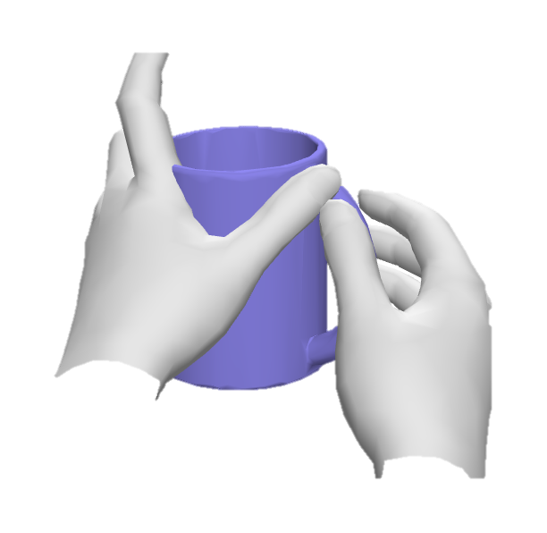
Single-frame grasp
Grasp latent
Reconstruction
Object geometry and hand position condition the reconstruction
Left hands are mirrored to the right: one GraspVAE for both hands
[0:30] First, we train a GraspVAE on individual hand–object frames. The encoder compresses each grasp into a latent code.
▸ click The decoder reconstructs the grasp from the code, given the wrist position and the object. Left hands are mirrored, so one GraspVAE serves both hands. So the GraspVAE learns the fine-grained interaction of the fingers .
LatentHOI · Training
Learn global motion and grasp latents together, conditioned on shape and text 1 Train GraspVAE
2 Train latent diffusion
3 Generate motion
Training sequence
Grasp latents
Global motion
Object poses + hand positions
Add noise to both streams
Train the denoiser
Object shape
“drink with the mug”
[0:35] Second, we freeze the encoder and encode the grasp in every training frame. This gives a sequence of grasp latents, alongside the global hand and object motion.
▸ click Then we train the diffusion model to denoise the grasp latents and the global motion together, conditioned on the shape and the text. Working in this compact latent space, instead of the full hand pose, makes it overfit less.
LatentHOI · Inference
Generate the motion, then decode the grasp
1 Train GraspVAE
2 Train latent diffusion
3 Generate motion
Object shape
“drink with the mug”
Noise
Repeated denoising × T
Grasp latents
Global motion
Hand–object motion
Per-frame decoding
Object shape also conditions the decoder
[0:35] At inference time, like any latent diffusion model, we start from Gaussian noise and apply the reverse diffusion process for T steps.
▸ click This produces the global motion and the sequence of grasp latents.
▸ click Then the frozen GraspVAE decoder reconstructs each frame's grasp from its latent. Combining the grasps with the global motion gives the complete motion sequence.
LatentHOI · Results
Users prefer LatentHOI over joint motion modeling
Glasses · unseen OakInk shape
Joint modeling
Decoupled modeling
User preference
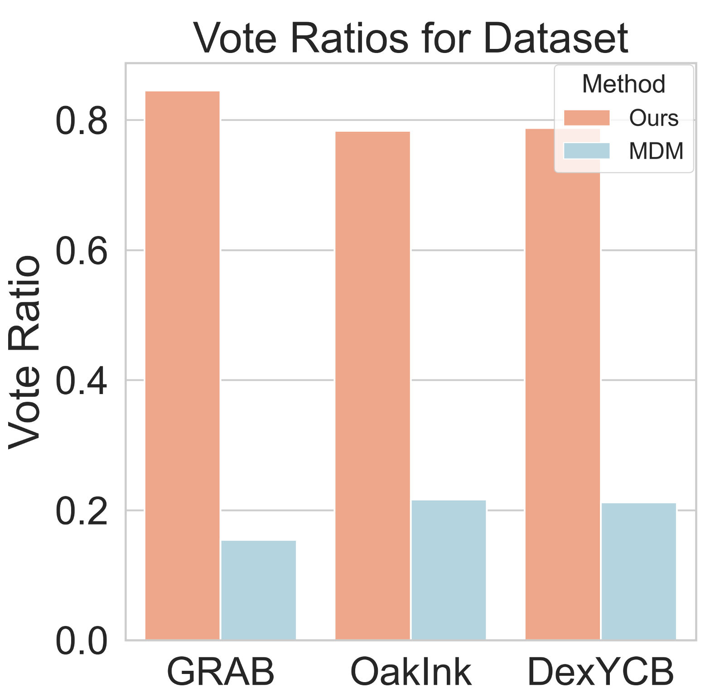
Confirm participant count and ethics/REB status.
[0:35] Here are the results, on objects unseen in training. First, a comparison: on the left, joint modeling, MDM, and on the right, ours. With joint modeling, the hands are often misplaced on the object, and they penetrate it a lot.
▸ click Here are four more examples, on in-the-wild objects.
▸ click And in the user study, people prefer ours .
LatentHOI · Results
Least penetration per unit of contact on unseen objects
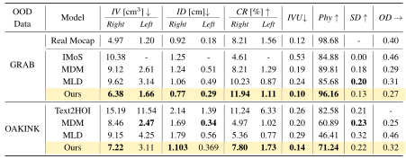
IV, ID ↓ how far the hand goes into the object
CR ↑ how much of the hand touches it
IVU ↓ penetration per unit of contact
Phy ↑ a lifted object must be touched
[0:30] Quantitatively: IV and ID measure how much the hand penetrates the object, CR measures contact, IVU is the penetration per unit of contact, and Phy is a simple check of physical plausibility. The one we care about most is IVU: ours is the lowest, on both test sets , and Phy is higher.
LatentHOI · Conclusion
Thrust 2
Use implicit structure in the data
When joint distribution is hard to model, utilize the implicit structure that splits one hard problem into two easier ones
Split, linked by a latent (ours)
Global motion
Fine-grained grasp
Latent \(Z\)
>
Modeled jointly
\(\mathbb P(H,O\mid C)\)
Explicit
Implicit
Mixture of Memory Embeddings
[0:20] So the conclusion of LatentHOI: when we are in the low-data regime, and the joint distribution is hard to model directly, we can split one hard generation problem into two easier ones , with an assumption about the implicit structure of the data.
In LatentHOI, data is scarce; the implicit structure also acts as a regularization for training
But what if we have enough data? Will model designs based on implicit structure still help?
[0:20] In the previous case, LatentHOI, part of the reason we used the implicit structure is that we don't have enough data, so the implicit structure acts as some level of regularization for the training itself.
▸ click But what if we have enough data? Will model designs based on implicit structure still help?
MoME: Mixture-of-Memory Embeddings for Context-Aware Sparse Lookup
Muchen Li , Leonid Sigal, Renjie Liao
Thrust 2
Use implicit structure in the data
Implicit structure of token semantics in memory embeddings of LLM.
LLM
The gardener sprayed the plant … bug
→ insect
The team delayed the release … bug
→ software error
The words before decide what “bug” means
Explicit
Implicit
Mixture of Memory Embeddings
[0:15] Now we are back at language models, where the structure is even more implicit. This is Mixture of Memory Embeddings, our NeurIPS 2026 paper: we study the implicit structure of token semantics in the LLM memory, from the token to its context.
Mixture of Memory Embeddings · Problem
compute it
or look it up
LLM
+
LLM
Embedding table
large, learned: additional parameters
Why it matters
Memory embedding tables are cheap to look up and sparsely activated, giving us an additional axis to scale LLMs.
Why it is hard
How to retrieve the memory embedding remains an open question.
M. Li, L. Sigal, R. Liao · Mixture of Memory Embeddings · NeurIPS 2026
[0:40] To get the meaning of "New York", a model can compute it, combining "New" and "York" through its layers, or simply look it up, like in a dictionary. Memory-embedding language models add such a dictionary : a large table of learned vectors, with a row for each token.
▸ click A lookup is cheap: it gives the model extra capacity at very little compute, where rebuilding the meaning takes layers.
▸ click But the entry is chosen by the token alone, blind to its context: "bug" the insect and "bug" the software error read the same entry.
Mixture of Memory Embeddings · Idea
VE / STEM
Engram
insect
The gardener sprayed the plant to get rid of a bug
\(\mathrm{id}(\text{bug})\)
\(\mathrm{hash}(\text{of a bug})\)
software
The team delayed the release because of a bug
\(\mathrm{id}(\text{bug})\)
\(\mathrm{hash}(\text{of a bug})\)
\(\mathrm{id}\to\)
\(\mathrm{hash}\to\)
same key for both senses
Ours
\(f(\text{bug}),\ g_\theta(\mathbf{h}_t^1)\)
\(f(\text{bug}),\ g_\theta(\mathbf{h}_t^2)\)
\(f\to\)
\(g_\theta(\mathbf{h}_t^1)\)
\(g_\theta(\mathbf{h}_t^2)\)
same row, different slots
[0:50] Take the token "bug": in the first sentence it means an insect; in the second, a software bug. Previous methods index the memory by the token ID, like Value Embedding and STEM, or by a hash of the last few tokens, like Engram. Either way, both senses get the same key, so they read the same cell of the memory.
▸ click But what "bug" means depends on its context: the gardener and the plant make it an insect; delaying the release makes it a software bug. That is the implicit structure.
▸ click In ours, the token, through f, still picks a row of the memory: the same row for both.
▸ click But a router, g, reads the context, the hidden state, and picks which slots in that row to read : here, different slots for the two senses.
Mixture of Memory Embeddings · Method
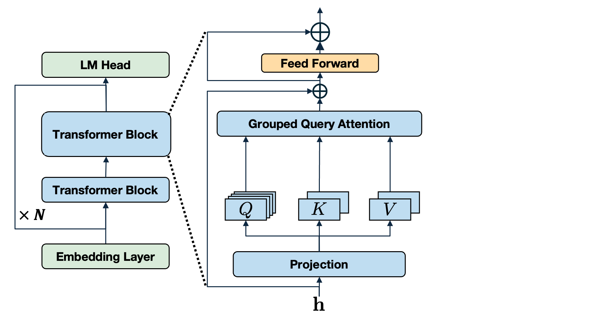
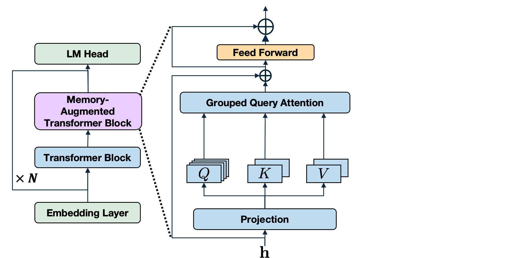
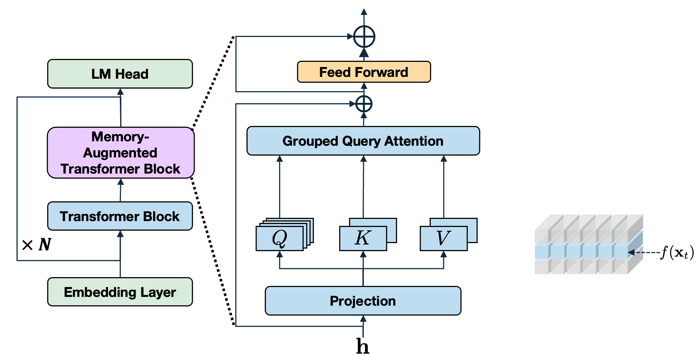
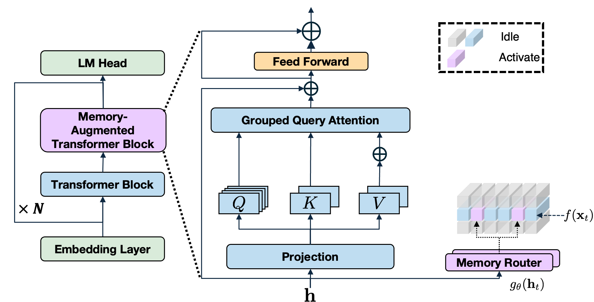
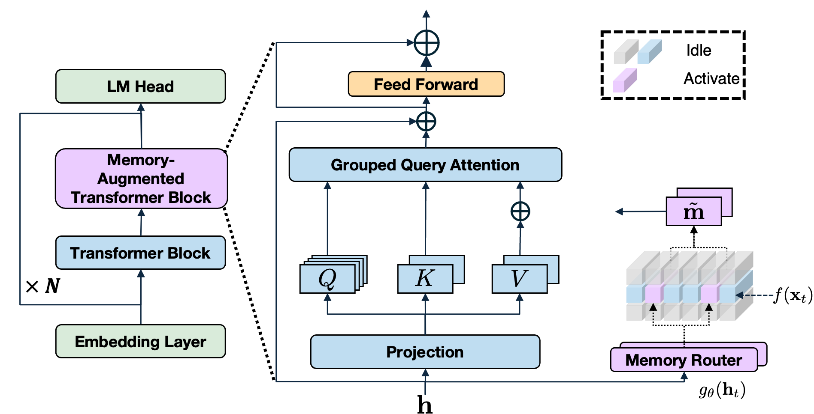
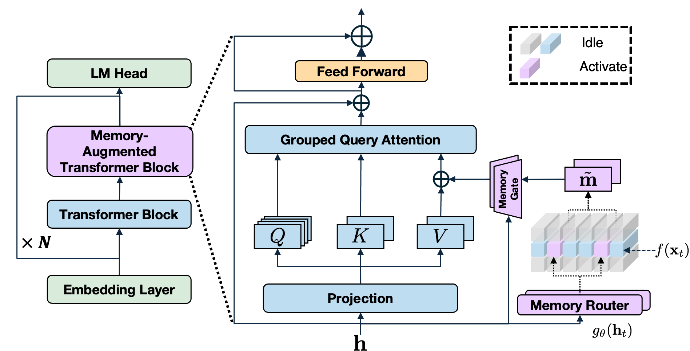
We start with a vanilla transformer
Every other block is memory-augmented; the rest is a standard transformer
\(n_t = f(x_t)\)
The token picks its row of \(M\) memory slots
\(g_\theta(\mathbf{h}_t) \rightarrow (\mathcal{A}_{t,i},\, \alpha):\quad \mathcal{A}_{t,i} = \mathrm{TopK}\big(\mathbf{W}^{(i)}_g \mathbf{h}_t + \mathbf{b}^{(i)}_g,\ K\big)\)
A router reads the hidden state and selects the top-\(K\) slots for each value head \(i\)
\(\tilde{\mathbf{m}}_{t,i} = \sum_{a \in \mathcal{A}_{t,i}} \alpha^{(i)}_{t,a}\, \mathbf{m}_{n_t,a}\)
The selected slots are mixed into one memory vector
\(\tilde{\mathbf{v}}_{t,i} = \mathbf{v}_{t,i} + \gamma_{\theta,t,i}\, \tilde{\mathbf{m}}_{t,i}\)
A gate adds it to the attention values: routing chooses what to read, the gate how much
[1:10] More concretely, here is the architecture. We start with a vanilla transformer architecture.
▸ click Then memory-augmented blocks alternate with the regular transformer blocks.
▸ click In each memory block, first the token index selects its row of memory slots.
▸ click Then the router reads the hidden state and selects the top-K slots in that row.
▸ click The selected slots are mixed into one memory vector.
▸ click And a gate adds it to the attention values. That's how the memory is fused into the transformer. The hidden state comes from the causal attention of the previous layers, so it has seen all the previous context. That makes our router context-aware , while previous methods index the memory by the token alone.
Mixture of Memory Embeddings · Analysis
Same word, different meaning → different slot
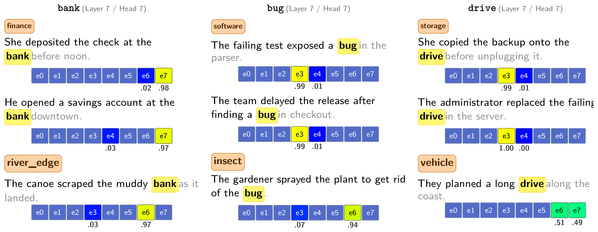
Across the whole model: the routing follows the word sense at 117 of 144 layer–head sites (Word-in-Context)
[0:50] So does the router actually learn what we expect? Here is one router head and the word "bank". The first two sentences both mean the financial bank, and the router activates the same memory slot. With a different meaning, a different slot is activated.
▸ click The same holds for "bug" and "drive", and the router is never told about word senses.
▸ click And across the whole model, on Word-in-Context sentence pairs, the routing follows the word sense at 117 of 144 layer–head sites. So the router captures how the meaning of a token depends on its context .
Mixture of Memory Embeddings · Results
Scaled up experiments to 100B token 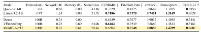
Best CORE-22 among the 100B runs
Close to Qwen3-0.6B, with under 0.3% of its training tokens
[0:45] Does it help the language model? We scaled up: a 0.78-billion-parameter model trained on 100 billion tokens, with no memory, with a token-indexed memory, Value Embedding, and with ours.
▸ click Ours has the best CORE-22 score of the three.
▸ click And interestingly, it comes close to Qwen3-0.6B, even though we train on less than 0.3 percent of its training tokens. Across three backbones and sizes, at the same training tokens, ours also has the best CORE, at only 4 to 8 percent more training time.
Mixture of Memory Embeddings · Conclusion
Thrust 2
Use implicit structure in the data
In language-model training, building the implicit structure into the model still improves interpretability and performance
Two indices (ours)
token →
context
>
One index
token →
Explicit
Implicit
Mixture of Memory Embeddings
[0:20] So for Mixture of Memory Embeddings, the conclusion: In language-model training, building the implicit structure into the model still improves interpretability and performance .
Conclusion
In conclusion, my thesis work studied the generative modeling of explicit and implicit structure in a few different applications. Thrust 1
Capture explicit data structure in training recipe.
Thrust 2
Use implicit structure to help model design.
Explicit
Implicit
GraphPNAS
A network is a graph: build it node by node
AoPS
A solution is a chain: recover it in the data
LatentHOI
Motion = global + grasp: split, linked by a latent
Mixture of Memory Embeddings
Context decides meaning: let it pick the memory
[0:35] So to conclude. My thesis studied generative modeling of explicit and implicit structure, across a few different applications. When we care about explicit structure, we should capture it in the training recipe. And when the structure is implicit, we can make assumptions about it, and use them to design the model. In both cases, building the structure in pays off: our models learned more efficiently, generalized better, and became more interpretable
Future work
Does a designed structure still pay off at frontier scale? data and compute GraphPNAS LatentHOI AoPS MoME This thesis ? beyond what we can train Frontier models tens of trillions of tokens
In other words: where does the Bitter Lesson stand on this axis?
The Bitter Lesson: R. Sutton, 2019
[0:50] Looking ahead, one open question remain. Everything in this thesis sits at the small end of this scale: limited data, or at most 100 billion tokens.
▸ click Frontier models train on tens of trillions of tokens, far beyond what we can train. Does a designed structure still pay off there? We don't know yet.
▸ click In other words: the Bitter Lesson, from Rich Sutton, tells us that general methods that scale with computation eventually win over methods that build in what we know. So where does the bitter lesson stand on this axis? My best guess: the advantage of designing structure may diminish as data and compute scale, but it will still pay off. Under the same data and compute budget, modeling the structure will still be more efficient than not modeling it.
Publications during my PhD
2021 Referring Transformer: A One-step Approach to Multi-task Visual Grounding
Muchen Li , Leonid Sigal · NeurIPS 2021
2023 GraphPNAS: Learning Probabilistic Graph Generators for Neural Architecture Search ★
Muchen Li , Jeffrey Yunfan Liu, Leonid Sigal, Renjie Liao · TMLR 2023
2024 Learning Latent Structures in Network Games via Data-Dependent Gated-Prior Graph Variational Autoencoders
Xue Yu, Muchen Li , Yan Leng, Renjie Liao · ICML 2024
2025 LatentHOI: On the Generalizable Hand Object Motion Generation with Latent Hand Diffusion ★
Muchen Li , Sammy Christen, Chengde Wan, Yujun Cai, Renjie Liao, Leonid Sigal, Shugao Ma · CVPR 2025
2025 Leveraging Online Olympiad-Level Math Problems for LLMs Training and Contamination-Resistant Evaluation ★
Sadegh Mahdavi*, Muchen Li *, Kaiwen Liu, Christos Thrampoulidis, Leonid Sigal, Renjie Liao · ICML 2025
2025 Beyond Accuracy: A Policy Gradient Reweighting Approach for Pass@K Maximization in LLMs
Sadegh Mahdavi, Muchen Li , Kaiwen Liu, Renjie Liao, Christos Thrampoulidis · AI for Math Workshop @ ICML 2025
2025 Test-Time Steering for Lossless Text Compression via Weighted Product of Experts
Qihang Zhang, Muchen Li , Ziao Wang, Renjie Liao, Lele Wang · Findings of EMNLP 2025
EMNLP 2025 On the Effect of Negative Gradient in Group Relative Deep Reinforcement Optimization
Wenlong Deng, Yi Ren, Muchen Li , Danica J. Sutherland, Xiaoxiao Li, Christos Thrampoulidis · NeurIPS 2025
2025 Free Lunch Alignment of Text-to-Image Diffusion Models without Preference Image Pairs
Jia Jun Cheng Xian*, Muchen Li *, Haotian Yang, Xin Tao, Pengfei Wan, Leonid Sigal, Renjie Liao · in submission (TMLR)
2026 CoRDS: Coreset-based Representative and Diverse Selection for Streaming Video Understanding
Ailar Mahdizadeh, Puria Azadi, Muchen Li , Xiangteng He, Leonid Sigal · NeurIPS 2026
2026 MoME: Mixture-of-Memory Embeddings for Context-Aware Sparse Lookup ★
Muchen Li , Leonid Sigal, Renjie Liao · NeurIPS 2026
To do: confirm the Free Lunch Alignment status on the defence date.
[0:15] These are all the papers from my PhD. The highlighted ones are first or co-first author, and the four I presented today are starred.
Acknowledgements
Supervisors
Supervisory committee
Leonid Sigal
Renjie Liao
Vered Shwartz
Jeff Clune
Examining committee
Chair Sarah Burke UBC Physics & Astronomy
University examiners Mark Schmidt UBC Computer Science
Yankai Cao UBC Chemical & Biological Eng.
External examiner Meng Jiang University of Notre Dame
Co-authors
Puria Azadi
Jia Jun Cheng Xian
Wenlong Deng
Xiangteng He
Kaiwen Liu
Sadegh Mahdavi
Ailar Mahdizadeh
Yi Ren
Ziao Wang
Xue Yu
Qihang Zhang
Yujun Cai
Sammy Christen
Yan Leng
Xiaoxiao Li
Shugao Ma
Danica J. Sutherland
Xin Tao
Christos Thrampoulidis
Chengde Wan
Pengfei Wan
Lele Wang
Haotian Yang
Funding and compute UBC Four Year Doctoral Fellowship · Vector Institute · CIFAR · NSERC · Digital Research Alliance of Canada · UBC Advanced Research Computing · Oracle for Research Internship Meta Reality Labs, Redmond (LatentHOI)
To do: confirm the funding list (from the papers’ acknowledgements); add the lab, friends and family if you want them here.
[0:30] I would like to thank my supervisors, Leonid Sigal and Renjie Liao; my supervisory committee, Vered Shwartz and Jeff Clune; my examiners, Mark Schmidt, Yankai Cao and Meng Jiang; Professor Burke for chairing; and all my co-authors.
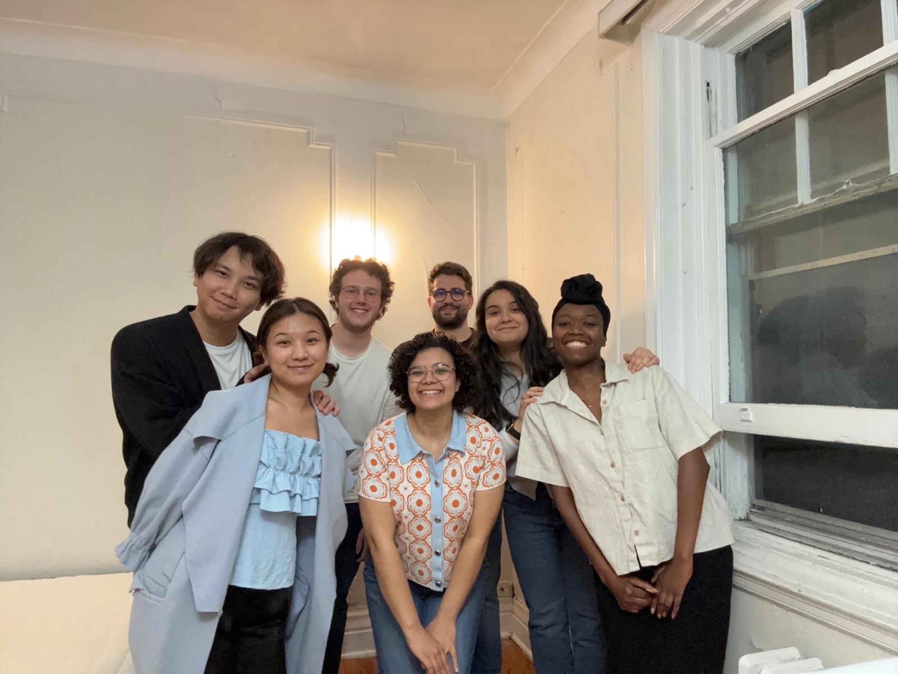
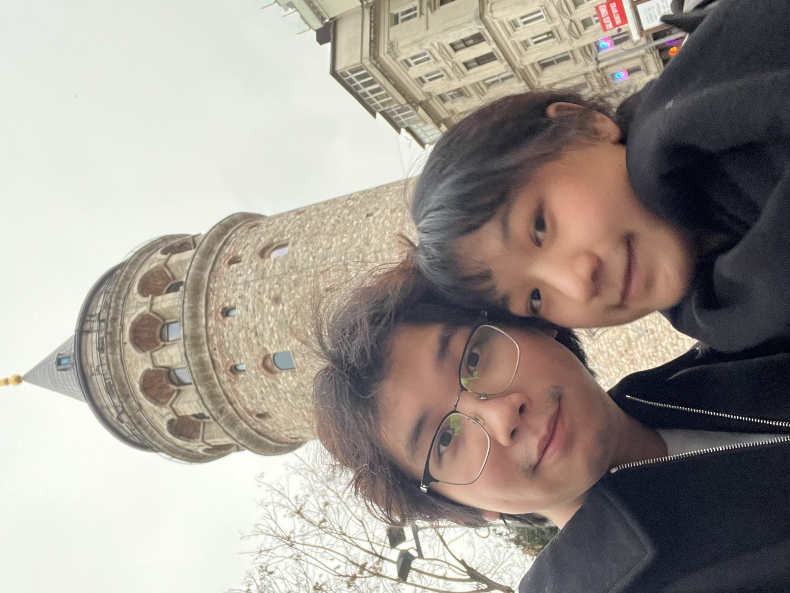
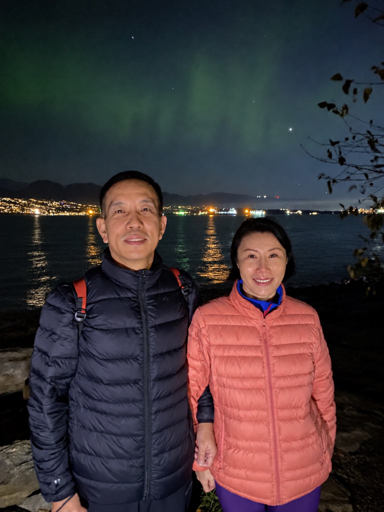
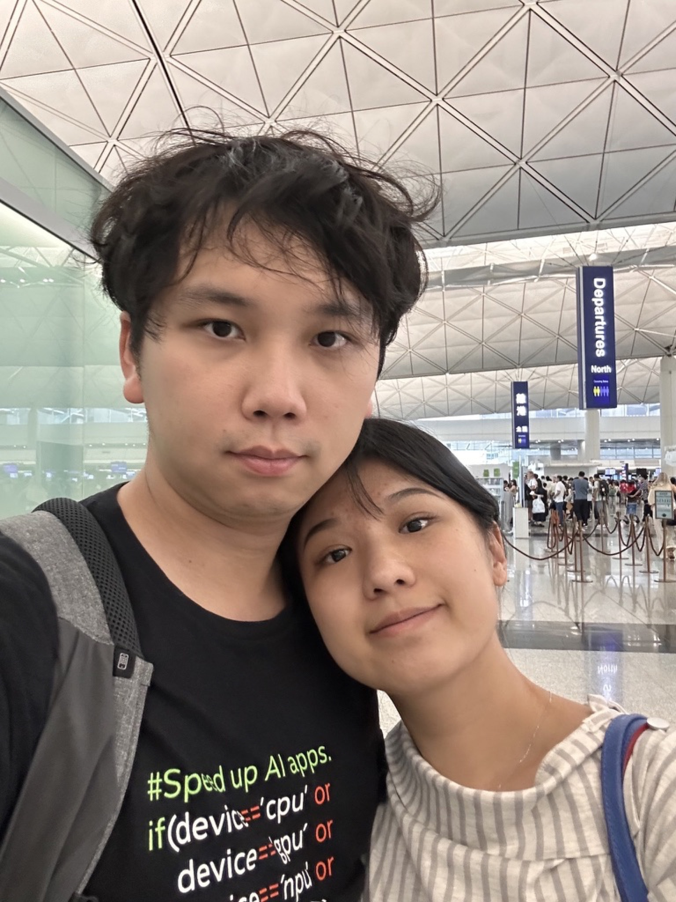
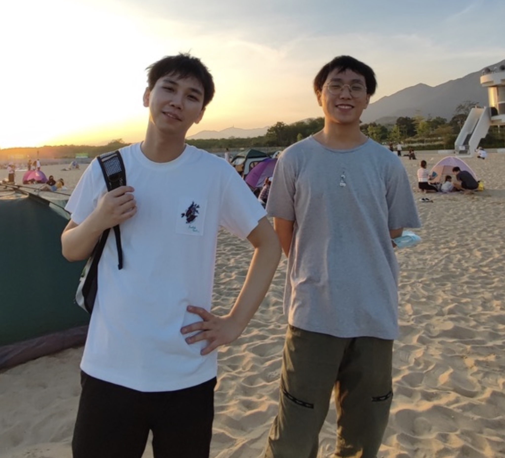
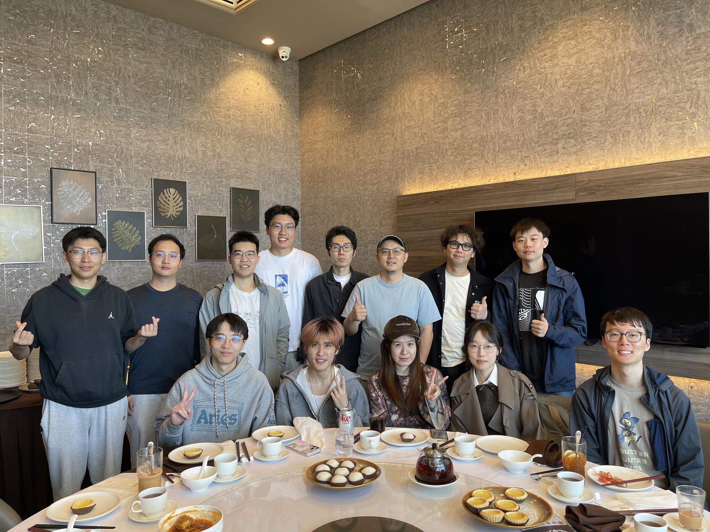
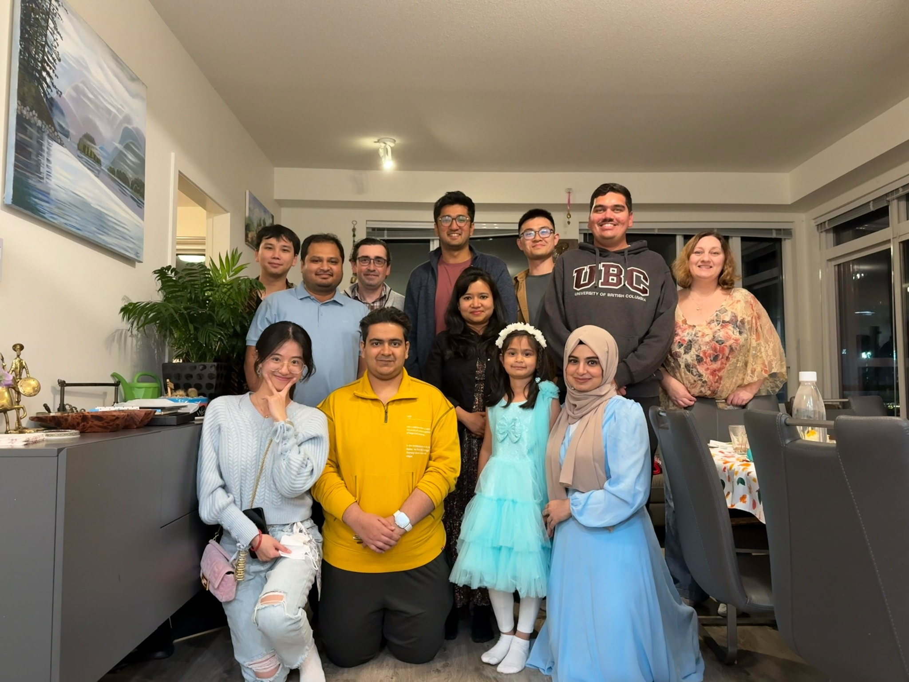
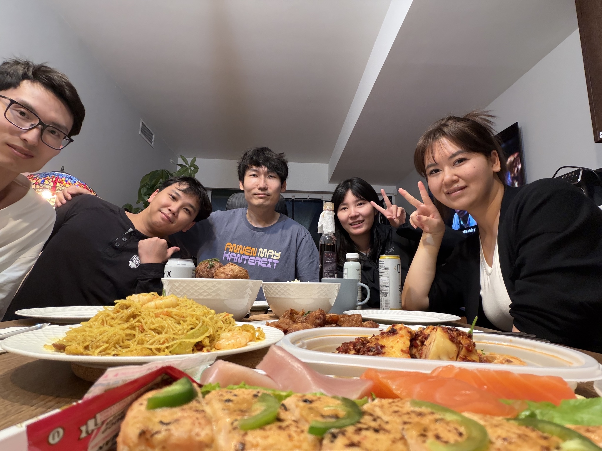
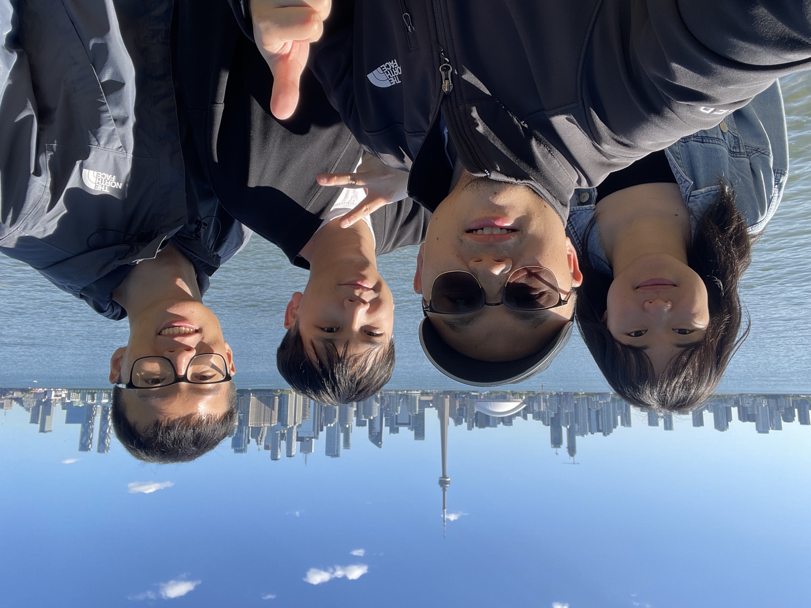
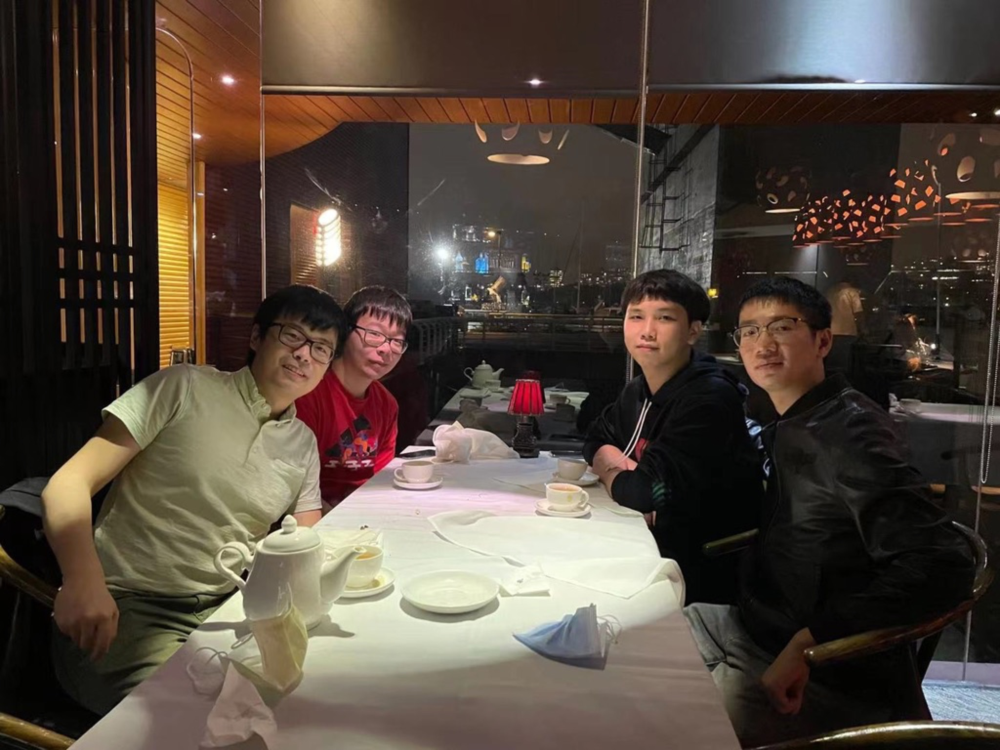
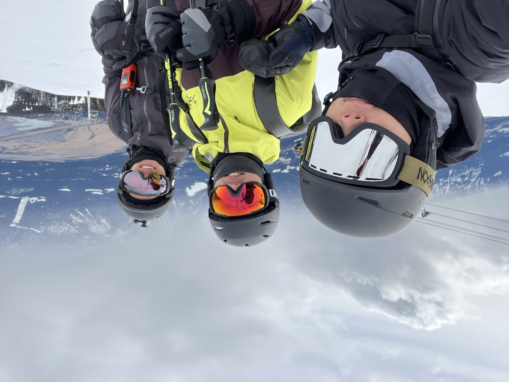
Mob
Sunny
[0:05] Thank you, and I'm happy to take your questions.
Backup · GraphPNAS
RandWire: at similar cost, GraphPNAS finds the most accurate networks
Image classification on Tiny-ImageNet: search the topology of one 32-node cell graph
2.1 × 10149
possible graphs
≈ 320
networks we can train (≈ 16 GPU-days)
Accuracy (%) of 4 networks per method · search: trained on 1/10 of the data · final: full training
RandWire: Xie et al., ICCV 2019 · Tiny-ImageNet: Chrabaszcz et al., 2017
Backup · GraphPNAS
The full search loop, trained with REINFORCE and a replay buffer
\(\nabla \mathcal{L}(\phi) = \mathbb{E}_{\mathbb{P}(\mathcal{G})}\left[- \frac{\partial \log \mathbb{P}(\mathcal{G})}{\partial \phi}\, \bar{R}(\mathcal{G})\right], \qquad \bar{R}(\mathcal{G}) = \frac{R(\mathcal{G}) - C}{\sigma}\)
\(\log \mathbb{P}(\mathcal{G}) = \beta\, \mathbf{1}_{\bar{R}(\mathcal{G}) \le 0} \log\big(1 - \mathbb{P}(\mathcal{G})\big) + \mathbf{1}_{\bar{R}(\mathcal{G}) > 0} \log \mathbb{P}(\mathcal{G})\)
\(C, \sigma\): mean and standard deviation of the rewards in the replay buffer · \(\beta\): weight of the negative samples
Figure and equations: GraphPNAS (TMLR 2023), pipeline figure (a) and §3.3 · REINFORCE: Williams, 1992
[0:00] The full pipeline: the generator samples cell graphs, each one wires a network (stem, three stages, classifier), and the evaluator's rewards go to a replay buffer. We train with REINFORCE, with the reward standardized by the replay buffer's mean and standard deviation, and a reweighted log-likelihood that balances positive and negative samples.
Backup · AoPS
AoPS-Instruct beats Numina on every model and benchmark
Same models, same fine-tuning — only the training data changes.
AoPS-Instruct beats Numina for every model on every benchmark.
Combining the two is best.
Numina: a large public dataset of competition-math solutions · AoPS24: our 2024 test problems
[0:00] We fine-tune four open models in exactly the same way, and only change the data: Numina, a large public math dataset, or ours. Ours beats Numina on every model and every benchmark.
▸ click And combining the two is the best.
Backup · MoME
Across backbones and sizes, ours has the best CORE at little extra training time
Same training tokens within each block · Mem: memory size · Wall: training time vs. no memory
Best CORE in every block
STEM needs 3–8× more memory
Only 1.04–1.08× training time
Backbones: Llama/MobileLLM 125M and 350M, Qwen3 0.6B · STEM: Sadhukhan et al., 2026 · Value Embedding: Zhou et al., 2024
[0:00] At the same number of training tokens, on three backbones: Llama-style models with 125 and 350 million parameters, and Qwen3 0.6B. The baselines are the dense model, STEM and Value Embedding.
▸ click Across backbones and model sizes, our memory has the best CORE score in every block.
▸ click STEM needs three to eight times more memory than ours.
▸ click And the comparison is fair in compute: our memory adds only four to eight percent training time.
Backup · MoME
Index the memory by both a cheap lookup and a context-aware gate
1
A cheap lookup
The token picks its row, which now stores several memory slots instead of one
2
A context-aware gate
A learned gate over the hidden state picks which slots to read at each position
+
So the memory captures what the token means, given the context before it
[0:00] The memory is indexed by both a cheap lookup and a context-aware gate. The token still picks its row, cheaply, but each row now stores several memory slots instead of one. And a learned gate reads the hidden state, which has already seen the context, and picks which slots to read.
Backup · Synthesis
Build the structure in where it lives: in the output, the model, the data, or the memory
Structure
Where we build it in
Evidence
1 GraphPNAS
A network is a graph of computation cells
Output · generate the graph node by node, with a GNN that sees the graph so far
Better networks than the RNN controller on RandWire and NAS-Bench-101
1 AoPS
Each reasoning step depends on the earlier steps
Data · rewrite forum threads as step-by-step solutions
AoPS-Instruct beats Numina on every model and benchmark
2 LatentHOI
The grasp depends on the global motion and the object
Model · diffusion for motion and grasp latents; a VAE decodes each frame’s grasp
Least penetration per unit of contact on unseen objects
2 Mixture of Memory Embeddings
A token’s meaning depends on its context
Memory · the token picks the row, the context picks the slots
Best CORE-22 at 100B tokens; routing follows word sense
1 Thrust 1: capture the explicit data structure
2 Thrust 2: make assumptions about implicit structure within the data, and use them to guide better generative model design
[0:00] One row per project: the structure, where we build it in, and the evidence. GraphPNAS and AoPS: the structure is the output, made explicit in the output and in the data. LatentHOI and Mixture of Memory Embeddings: the structure is hidden inside the output, built into the model and into the memory.
Backup · GraphPNAS
Late in the search, GraphPNAS's samples concentrate on good graphs
[0:00] Late in the search, GraphPNAS's samples concentrate in a region of good graphs. The samples from the RNN scatter widely, including dense graphs that perform poorly.
Backup · LatentHOI
The factorization, in the paper’s notation
\(\mathbb P(H^{1:N},O^{1:N}\mid C)=\int\underbrace{\mathbb P_\theta(Z^{1:N},O^{1:N},H_\gamma^{1:N}\mid C)}_{\text{diffusion: global motion + grasp latents}}\ \prod_{i=1}^{N}\underbrace{\mathbb P_\theta(H_\phi^i\mid Z^i,O^i,H_\gamma^i,C)}_{\text{GraspVAE: per-frame grasp}}\,dZ^{1:N}\)
\(H_\gamma\) hand-root translation, relative to the object
\(H_\phi\) hand rotation and 15 joint rotations (MANO, 6-D rotations)
\(O\) object rotation and translation
\(Z\) 16-D grasp code per frame
\(C\) object point cloud (BPS) and text (CLIP)
Given its code, the wrist and the object, each frame’s grasp is decoded on its own (a model assumption)
Backup · LatentHOI
Complete quantitative evaluation
SD: variation among samples for the same condition · OD: variation across all generated samples
IMoS: Ghosh et al., 2023 · MDM: Tevet et al., 2023 · MLD: Chen et al., 2023 · Text2HOI: Cha et al., 2024
[0:00] Full original table, including sample and overall diversity.
Backup · LatentHOI
The latent representation improves grasp generation
IVU ↓
0.13 → 0.10
“Diffusion w/o latent”
Limits of generalization
Very different object sizes or geometry remain difficult.
Ablation values and row names reproduced from the paper; limitation from the conclusion
[0:00] The published “Diffusion w/o latent” ablation has IVU 0.13, compared with 0.10 for the full model.
▸ click Objects whose size or geometry differs substantially from training remain difficult. The model also cannot generate motion intents absent from the training data.
Backup · LatentHOI
Generated motion on in-the-wild objects
Backup · LatentHOI
Against Text2HOI on unseen OakInk objects: far less penetration
Text2HOI loses track of the glasses and penetrates the flashlight
CR and Phy as fractions here · Text2HOI’s high left-hand penetration also counts as contact
Text2HOI: Cha et al., 2024
[0:00] Against Text2HOI on unseen OakInk objects: far less penetration. Its higher contact ratio and Phy come from penetration, which also counts as contact.
Backup · LatentHOI
One hand (DexYCB), and DiffH2O’s setting: lowest penetration per contact in both
DexYCB: one hand
+ OakInk single frame: the GraspVAE also trained on single-frame OakInk grasps
GRAB, in DiffH2O’s setting
MDM*: DiffH2O without its canonical hand representation and joint distance field; same 1-D U-Net backbone
MLD: Chen et al., 2023 · MDM: Tevet et al., 2023 · DiffH2O: Christen et al., 2024
[0:00] On single-hand DexYCB, and in DiffH2O's setting on GRAB, ours has the lowest penetration per unit of contact. Training the GraspVAE also on single-frame OakInk grasps raises Phy to 100.
Backup · LatentHOI
Training longer trades diversity against penetration
Diversity trades off against penetration; diversity alone does not mean good motion: implausible poses can be diverse
[0:00] Training longer trades sample diversity against penetration, and diversity alone is not quality: implausible poses can be diverse.
Backup · LatentHOI
Failure cases: unseen intents and very different shapes
“use the driller” : an intent not in the training data
“use the hammer” : a shape very different from the training objects
The paper’s limitation: very different object sizes or geometry, and motion intents outside the training data
[0:00] Failure cases on unseen OakInk objects: "use the driller", an intent not in the training data, and "use the hammer", a shape very different from the training objects.
Backup · LatentHOI
User study: 51 side-by-side clips, sides flipped at random
51 side-by-side clips: 17 GRAB, 26 OakInk, 8 DexYCB
Ours and MDM side by side; the sides flipped at random (p = 0.5)
Agreement between participants (Cohen’s κ): GRAB 0.491 · OakInk 0.4663 · DexYCB 0.127
Confirm the participant count and the ethics/REB status.
[0:00] The user study: 51 side-by-side clips of ours and MDM, the sides flipped at random.
Backup · MoME
Token-embedding memory: each token reads its own row of a learned table bug added to the model a large learned table: one row per token Look up what a token means, instead of rebuilding it with computation
The row is chosen by the token (Value Embedding, STEM) or by its last 2–3 tokens (Engram)
Value Embedding: Zhou et al., 2024 · STEM: Sadhukhan et al., 2026 · Engram: Cheng et al., 2026 (Engram, DeepSeek-AI)
Backup · MoME
Across the model, routing follows word sense at most layer–head sites
Word-in-Context: 670 sentence pairs that share a word, in the same or a different sense · blue: routing follows the sense
117 / 144
sites: the routing weights follow the sense
110 / 144
sites: the chosen slots follow the sense
Caveat An association with word sense, not a causal test.
WiC: Pilehvar & Camacho-Collados, 2019 · ΔÕ: Olson et al., 2025 · model: nanochat d24, 100B tokens
[0:00] To test this across the whole model, we use Word-in-Context, a dataset of sentence pairs that share a word, labelled same or different sense. At every layer and head, we check whether the routing changes more when the sense changes.
▸ click Blue means yes. This holds at 117 of the 144 sites for the routing weights, and at 110 of 144 for the chosen slots.
▸ click This is an association with word sense. It is not a sense classifier, and not a causal test.
Backup · MoME
Conditional memory: look static patterns up instead
Engram: hashed 2- and 3-gram embeddings, gated by the hidden state
Two ways to add sparse capacity
Mixture of experts: conditional computation
Memory embeddings: conditional memory
The row is chosen by
the token (Value Embedding, STEM)
the last 2–3 tokens (Engram)
Figure: Cheng et al., 2026 (Engram, DeepSeek-AI) · MoE: Shazeer et al., 2017 · Value Embedding: Zhou et al., 2024 · STEM: Sadhukhan et al., 2026
[0:00] Mixture of experts adds capacity through conditional computation; memory embeddings add it through conditional memory, a large learned table where each token reads only a few rows. Engram picks the row with a hash of the last two or three tokens, and gates the memory with the hidden state.
Backup · MoME
Without a lookup, the model rebuilds a phrase layer by layer
What the last token “Wales” encodes, layer by layer: the model needs six layers to reach “Diana, Princess of Wales”
Table: Cheng et al., 2026 (Engram, DeepSeek-AI), reproduced there from Ghandeharioun et al., 2024
[0:00] Without a lookup, the model rebuilds what a phrase means layer by layer: the last token, "Wales", only stands for "Diana, Princess of Wales" at layer six.
Backup · MoME
Memory is used most in the first and last layers
nanochat d24 (100B tokens), averaged over the CORE tasks · (a) size of the injected memory \(\lVert\gamma\,\tilde{\mathbf{m}}\rVert_2\) per layer · (b) mean injection gate \(\gamma \in [0, 2]\) per layer and head
[0:00] Memory is used most in the first and the last layers, and much less in the middle.
Backup · Future work
Where are the boundaries of designing implicit structure? Motion
gain from the designed structure training data (log scale) boundary? Hand–object (GRAB) Body motion (AMASS) Hand–object motion, GRAB: 1.3k sequences — splitting helps a lot Body motion, AMASS: 11.2k sequences — joint models already work Language
gain from the designed structure training data (log scale) boundary? MoME (100B tokens) ? Frontier ≈36T tokens Mixture of Memory Embeddings, 100B tokens — still a gain Frontier LLMs, ≈36T tokens — unknown Next: measure where the gain of a designed structure goes as data and compute grow
A sketch of the question, not measured data · sequence counts: the LatentHOI paper · 36T tokens: Qwen3’s pretraining
Backup · Future work
When the structure matters, can we discover it from data instead of designing it? Designed by us · LatentHOI
Global motion
Fine-grained grasp
Latent \(Z\)
We chose the split: global motion and grasp
Discovered by the model · MoME
The router found word senses, never told
? Next: learn which parts to decouple, and the latent that links them, from data
[0:00] Second:
▸ click But in Mixture of Memory Embeddings, the router already discovered word senses on its own, without ever being told.
▸ click So next, I would like to learn the split itself, which parts to decouple and the latent that links them, so the recipe carries over to new domains.